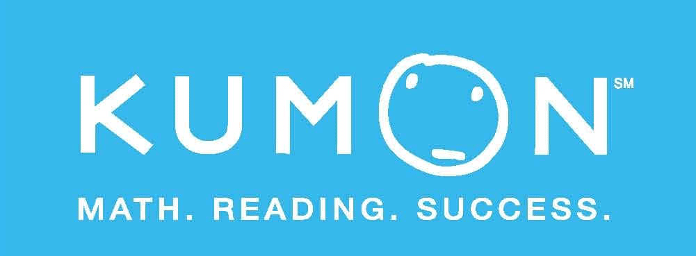
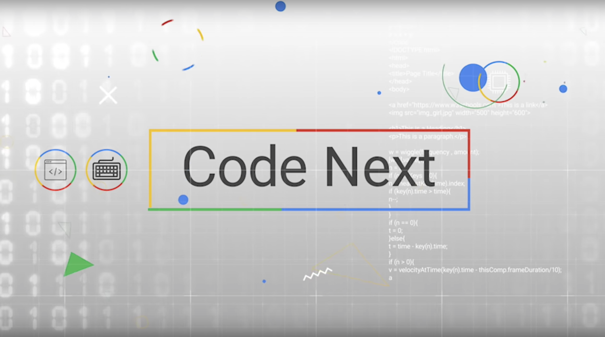

Kumon Math and Reading
I started the Kumon program in 5th grade because I was struggling with math, and gratefully, my wonderful parents thought it would be worthwhile to invest in my education, so I started the Kumon program. At first it was one of the most challenging things I’ve ever taken on, as it was a self paced program. Being goal-oriented, I was always pushing myself to do more and more. With time and experience in the program, I started learning faster, getting better study habits, improving my time management skills, and began to see additional benefits. Now that I have completed the Kumon curriculum, which goes through AP Calculus BC, I have volunteered for multiple months as a teacher at the center. I was recently hired as an official Kumon teacher. To this day, I work there with the goal of making a positive impact on at least one student, just as the program and the teachers made on me! Want to learn more about Kumon? Click here!
Google's Code Next Connect
Google has created a program called, “Code Next”, and the online version is called “Code Next Connect”, which is the program I participated in. In Code Next Connect, Black, Latinx and Native highschoolers all over the United States, have the amazing opportunity to apply and get into a program that teaches you programming languages such as HTML, Python, and JavaScrpt. In this program, you learn all those languages while also leanring web dev, creative coding, and lastly, how to make music through coding. This program is extremely prestigious, and the fact that this porgram is free at cost, AND comes with a stipend, my family and I were incredibly happy I got in! The credit goes back to my sister, who originally told me about this program, and urged me to apply even though I didn’t think I had enough experience. Now that I have completed that program, I am forever grateful for all the skills I’ve learned, cs related and non-cs related, Google’s Code Next Connect program gave me confidence in my cs skills that I wouldn't have ever thought I could achieve. Want to learn more about Google's Code Next Connect program? Click here!
Girls Who Code

The summer before highschool is when my sister called me and said, “Hey, so there’s this cs program for girls, its called “Girls Who Code”, and I really think you should apply”, so heck, of course I applied! This was before I’d done any cs program though, and the only reason I even knew what coding was is because I went to some websites like “Free Code Camp”, which teaches you how to code, for free of cost! But, I didn’t have any real tech background on my resume. So, as you could have imagined, I got rejected. This was of course extremely devastating, but it taught me that I needed to learn more before I applied again bevcause as I said earlier, Im very goal oriented, and getting into Girls Who Code, was my new goal. As I tried my best to get a stronger background of CS by taking all the CS classes at my school and being in all the CS clubs at school, I tried applying again my sophomore year of highschool. By now, I had thought of Girls Who Code as this magical program that only a select few girls and non binary students have the opportunity of getting into, so if I had got in, I would probably facetime my sister immediately and just start cheesing like I’ve never before. Well… I GOT IN!!! I did in fact facetime my sister immediately and smiled like I’ve never before, and now, being in this program, I can confirm that my idea of this program is true, it is magical, and it is an amazing opportunity. So far in this program, we’ve already learned HTML on the first day, and CSS on the second day, and I cannot wait to continue learning CS within this program, and outside of the program! Want to learn more about Girls Who Code?Click here!
Kode With Klossy
Kode With Klossy is actually a program I have not participated in yet, though I have been accepted and I am scheduled to attend to the program next month, in person, which I am beyond excited for! Kode With Klossy is a program for women and non-binary individuals to learn the fundementals for CS! You get to choose which type of class you want to be in, whether that be web dev, app dev, or data science, you get to choose to participate in person or online, and, to top everything off, this program is completely free to all students, which makes it easily accessible but also highly competitive to get in! I am extremely grateful for the opportunity to participate in their web dev program in person, as I thoroughly enjoy making websites and I want to become as experienced as I can be! Hopefully in the future, I can use these wonderful skills in my spectacular tech career! Want to learn more about Kode With Klossy? Click here!